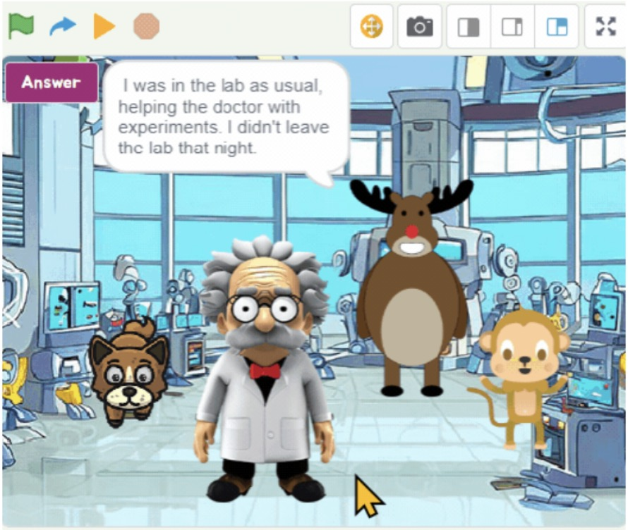

ACT 1: Scratch Create
- Grade 4
- Scratch
- Foundational CS concepts
- Sequences, events, and loops
Grounded in research and built for real classrooms,
our free K–8 curricula are designed for any educator and learner with any background to use with confidence.
Project-based learning · Block-based coding · AI literacy · Culturally relevant · Free
Created by the Computing and AI for All team at UC Irvine's Digital Learning Lab.
Choose the pathway that matches your grade level and learning goals.


